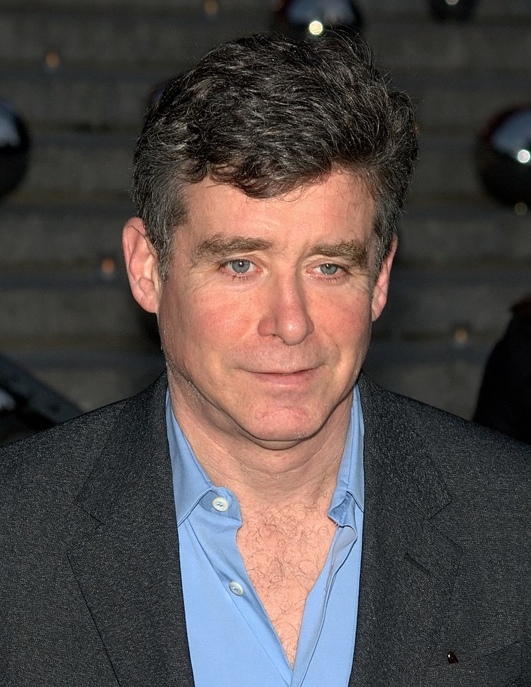

.Mclnerney [Sinh 1955].
Chính là với tác phẩm Bright Lights Big City (tạm dịch Thành phố lớn đèn đóm sáng trưng), viên đạn trái phá đầu tiên và là tác phẩm đầu tiên của hàng loạt cuốn sách nói về thái độ ưa chuộng mốt mà chàng trai Mclnerney [Sinh 1955] trở thành một ngôi sao ở New York. Ít năm sau anh chàng lại bắn tiếp với cuốn Ba mươi năm và những bụi bặm kể lại những cuộc phiêu lưu của một cặp Yuppie (lớp trẻ kỹ thuật thành đạt) trong lòng Trái táo lớn vào những năm 80. Tiếp đó là tác phẩm thành công hơn cả Kẻ dã man cuối cùng, một loại tiểu thuyết miền Nam nước Mỹ về những năm 70, một thứ chủ nghĩa cổ điển đầy kinh ngạc. Cuối cùng tác giả lại quay về với New York và những trào lưu thời thượng của nó với tác phẩm Glamour Altitude - (Chạy theo sự hấp dẫn).
Jay Mclnerney, người được mệnh danh là Thằng bé bẩn thỉu đã nói lên quan niệm của mình về lối sống và giá trị Mỹ.
* Sau một ít năm sống với cỏ cây ở Tennessee, giờ anh trở lại với Glamour Altitude, với những tình yêu cũ: New York, cuộc sống ban đêm, những trào lưu thời thượng.
– Đúng vậy, New York là ngôi nhà tinh thần của tôi. Ở Tennessee tôi không có những quan hệ xã hội, không có động lực kích thích. Thôn quê thường tốt cho việc viết lách nhưng tôi lại cần những kích thích của thành phố. Ở nông thôn, sự chuyển hóa của tôi bị chậm lại. Cả như không có những cám dỗ thì ở New York tôi vẫn làm việc tốt hơn. Ông thấy đấy ở New York mọi thứ đều diễn ra nhanh hơn. Và rồi New York đã thay đổi và lại làm tôi quan tâm. Cuối thập kỷ 80, tôi đã chán ngấy New York. Tôi đã quá no nê với nó. Tôi phải bỏ đi thôi. Là nhà văn, tôi cần một bối cảnh mới.
* Nhưng sau cuốn Kẻ dã man cuối cùng, tại sao lại có sự trở về này với thế giới những tác phẩm đầu của anh? Anh bỏ đi suốt 10 năm để làm cho chúng tôi một biên niên sử mới về một cuộc sống mốt ở New York?
– Đúng, tôi tin là thế đấy. Tôi không thể làm gì khác. New York hấp dẫn tôi. Một số nhà phê bình đã nói đến sự giật lùi. Có thể thế. Sự thực tôi đã muốn viết một cuốn sách thật vui. Người ta sẵn sàng nói rằng những năm 80 là những năm cực đoan, nhưng những năm 90 lại còn cực đoan hơn, sự tôn thờ việc nổi tiếng còn mãnh liệt hơn. Một cách nào đó những năm 90 suy đồi hơn rất nhiều so với thập niên trước. Và rồi việc tôi quay lại với cái thế giới tuổi trẻ của mình có lẽ chỉ đơn giản là một tác động của sự khủng hoảng của tuổi 40.
* Sự quay lại New York của người cuối cùng của nhóm Thằng bé bẩn thỉu nhưng không phải là quay về với thời kỳ của “tình dục, ma túy và rock’n roll” chứ?
– Tôi không yêu gì mấy cái tên Thằng bé bẩn thỉu để gọi chúng tôi, Breat Easton Ellis, Tama Janowits, David Leawit, bản thân tôi và một vài người khác nữa. Nhóm này chả thích hợp với bất cứ cái gì, chỉ là một sự tùy tiện của báo chí để tập hợp một thế hệ nhà văn, thực ra vốn không có gì chung nhau đáng kể. Còn quay trở lại với tình dục, ma túy và rock’n roll ư, không phải thế đâu. Tôi đã lấy vợ, có con. Bạn biết đấy, cuộc đời có những giai đoạn khác nhau. Tất cả những cái đó không còn hấp dẫn tôi nữa như khi tôi vào tuổi 23. Cái đó không còn sự hấp dẫn mới mẻ đối với tôi, tôi đã thử hết rồi.
* Không hối tiếc gì ư?
– Từ khi tôi làm văn học, tôi chả hối tiếc điều gì cả. Đấy là cái không khí thời đại, nó trở thành một phần trải nghiệm của tôi. Thế hệ tôi không có chiến tranh, bởi vậy theo cách của mình chúng tôi đã đùa với những giới hạn. Khi nhìn lại, tôi tự bảo rằng đấy là một trò đùa nguy hiểm. Tôi biết rất nhiều người đã rơi xuống vực thẳm ma túy. Tôi đã may mắn không bị như thế. Vào thời đó, việc dùng ma túy xem ra rất bình thường, nó là một phần của cuộc chơi, của đời sống ban đêm: Hít ngửi, nói chuyện suốt đêm, tán tỉnh gạ gẫm. Trong mắt tôi, cocaine, cái kiểu của sự mê cuồng khôn dứt đó; là một hoán dụ của những năm 80. Đấy là một loại ma túy lạ lùng, người ta không bao giờ cảm thấy đủ. Và những năm 80 cũng giống như thế, người ta cảm thấy một sự thèm khát không bao giờ thỏa mãn. Nhưng tốt thôi, tôi đã nếm đủ. Tôi không hối tiếc nhưng đặc biệt tôi không muốn con cái tôi nghiện hút. Vấn đề là việc tôi không thể giấu được chúng là tôi đã từng nghiện hút, đấy là do sự nổi tiếng hiện nay với những cuốn sách này.
* Nếu tin vào sách anh thì anh không thực sự yêu những người mẫu hàng đầu phải không?
– Giả sử, như phần lớn những người đàn ông khác, tôi cũng yêu họ. Hơn nữa, chẳng hạn tôi đã sống với nhiều người trong số họ và tôi còn lấy một người, thật khó mà bảo rằng tôi không yêu họ. Nhưng tôi đâm hoảng bởi cái người ta gán cho họ một cái gì quan trọng đến thế, trong khi họ chả đại diện cho cái gì cả. Đấy là thí dụ điển hình nhất về cái phù phiếm của sự nổi tiếng thời buổi này. Cái mà người ta tôn vinh chính là một hình ảnh. Những người mẫu không nhất thiết là ngu ngốc, nhưng sự thông minh ở họ cũng không phải chỗ, giống như vẻ đẹp ở một viên cảnh sát. Người ta có thể tìm thấy một cảnh sát đẹp trai nhưng đẹp trai không phải là cái tạo ra một cảnh sát. Ngay cả Claudia Schiffer cũng là một thiên tài đi nữa, thì cái đó cũng không phải là cái mà người ta yêu thích ở cô gái này.
* Cứ như đọc sách của anh người ta có cảm tưởng rằng trong mắt anh tất cả những kẻ nổi tiếng, đặc biệt là các diễn viên, đều là hoặc chỉ có thể là bọn ngu ngốc…?
– Cũng thật kỳ lạ là những kẻ chúng ta tôn vinh thì thường là những người đóng vai trò một người nào đó mà không phải là chính họ. Tại sao lại gán cho các diễn viên một tầm quan trọng đến vậy? Cách đây hai hay ba trăm năm, những người đáng kính không tiếp một diễn viên tại nhà riêng. Còn bây giờ, trong nền văn hóa toàn cầu, Julia Roberts và Kevin Costner nằm trên thiên đỉnh, chẳng có ai cao hơn họ cả. Tôi cảm thấy lạ lùng khi đặt lên cao đến thế những người không sáng tạo ra một cái gì, không làm gì để thúc đẩy bước tiến của nhân loại. Một hôm tôi dùng bữa với một ông bạn, một kiến trúc sư. Anh ta đang tính chuyện ly hôn, khi tôi vừa ngồi xuống anh ta bảo tôi: “Thật tốt khi Brad Pitt và Gwyneth Paltrow bỏ nhau, cô ta không phải mẫu người dành cho anh ta”. Ngạc nhiên, tôi hỏi anh: “Anh biết họ à?”. Không, tôi không biết họ. Đấy là một thứ hội chứng: Thời chúng ta, người ta sống cuộc đời mình bởi sự ủy thác qua cuộc đời của các ngôi sao. Thật kinh khủng.
* Trong tất cả các tác phẩm của anh, những câu chuyện tình đều kết thúc buồn. Anh không tin vào tình yêu có hạnh phúc ư?
– Tôi cho rằng sự thực hiện điều ham muốn bao giờ cũng thấp hơn sự hoang tưởng. Tôi cũng cho rằng đam mê không lâu bền. Nhưng nếu tôi tin vào tình yêu vĩnh hằng thì đấy là điều lý tưởng, nhưng cái đó rất hiếm hoi. Tôi không có được cái may mắn đó: Tôi đã lấy vợ ba lần và đã có đến hàng đống bạn gái. Hơn nữa tôi đã tặng sách tôi in ra tại Mỹ cho tất cả những người đã từ bỏ tôi. Dù thế nào thật khó mà viết về hạnh phúc bởi rằng có một cái gì thật mơ hồ, trong khi đó thì nỗi bất hạnh là một cái gì thật rõ ràng mà người ta có thể miêu tả được.
* Người ta thường coi anh là Fitzgerald của những năm 80. Anh có thích sự khen tặng đó không?
– Có, vì tôi hết sức khâm phục Fitzgerald và vì những tác phẩm của ông đối với tôi rất quan trọng. Hơn nữa, hai chúng tôi có nhiều điểm chung. Cả hai đều là dân Công giáo gốc Ailen, cả hai đều thành công từ rất trẻ, cả hai đều nói về những con người có cuộc sống dễ chịu. Tất cả những cái đó đều thật nhưng đồng thời sự so sánh cứ lặp đi lặp lại đó làm tôi có phần mệt mỏi. Tôi vừa tròn 44 tuổi và nếu nhớ rằng Fitzgerald chết vào cái tuổi đó, người ta sẽ phải tìm kiếm một cách liên tưởng khác.